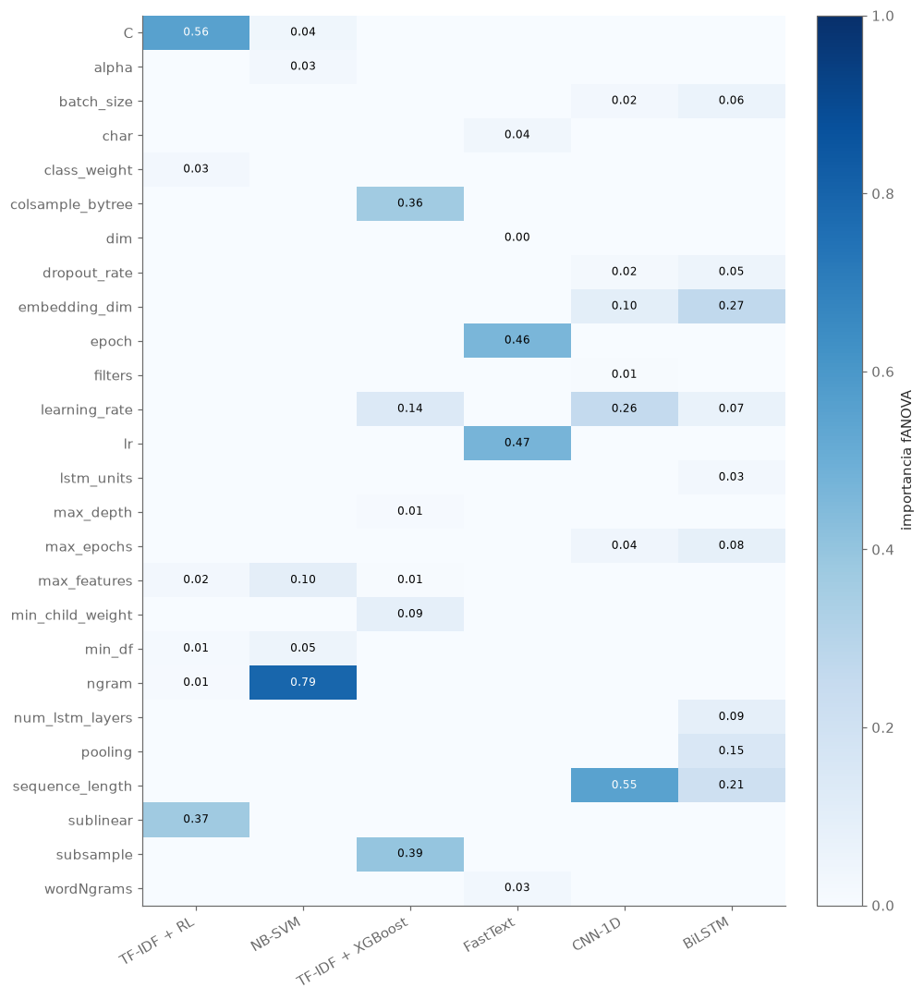
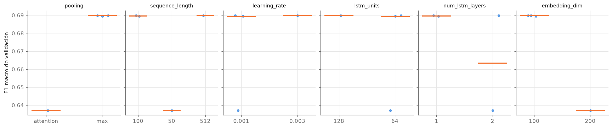
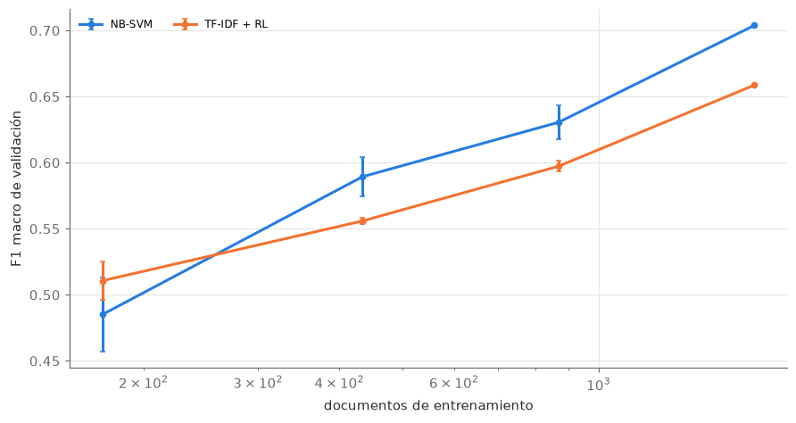

Modelos de clasificación de texto y búsqueda de hiperparámetros#
En este capítulo describimos los ocho modelos, el espacio de búsqueda de cada uno y lo que la búsqueda revela sobre la sensibilidad a los hiperparámetros. Todos los modelos ligeros reciben el mismo presupuesto: 30 trials de Optuna con TPE y poda por mediana [Akiba et al., 2019, Bergstra et al., 2011], entrenando con entrenamiento y midiendo F1 macro en validación. Los resultados los generan los trabajos nlp_hpo_*, nlp_nested_* y bert_lrgrid de la cola.
import numpy as np
import pandas as pd
import matplotlib.pyplot as plt
from IPython.display import Markdown, display
from project.analysis_nlp import boundary_hits
from project.book_utils import CAT, ci, exists, need, style
style()
pd.set_option("display.precision", 3)
S = need("analysis/nlp_stats/stats.pkl")
L = S["labels"]
Inventario#
Modelo |
Implementación |
Representación |
Hiperparámetros buscados |
|---|---|---|---|
Clase mayoritaria |
Propia |
— |
— |
TF-IDF + regresión logística |
scikit-learn |
TF-IDF (1–2 gramas) |
C, n-gramas, frecuencia mínima, TF sublineal, tamaño del vocabulario, peso de clases |
NB-SVM [Wang and Manning, 2012] |
Propia sobre scikit-learn: 24 regresiones logísticas uno contra resto sobre rasgos binarios escalados por la razón de log-conteos |
TF-IDF binario |
C, α (suavizado), n-gramas, frecuencia mínima, vocabulario |
TF-IDF + XGBoost [Chen and Guestrin, 2016] |
xgboost, 600 árboles con parada temprana (30 rondas) en validación |
TF-IDF (1-gramas) |
profundidad, tasa, submuestreo de filas y columnas, peso mínimo de hijo, vocabulario |
FastText supervisado [Joulin et al., 2017] |
fasttext |
n-gramas de palabra y de carácter |
tasa, épocas, n-gramas de palabra, dimensión, n-gramas de carácter sí/no |
CNN-1D [Kim, 2014] |
Propia en Keras: filtros de ancho 2, 3, 4 y 5 en paralelo, max-pooling global con máscara de relleno |
embeddings Word2Vec skip-gram (entrenamiento) |
filtros, dropout, tasa, lote, longitud, épocas máximas, dimensión |
Word2Vec + BiLSTM [Hochreiter and Schmidhuber, 1997] |
Propia en Keras: 1 o 2 capas bidireccionales, pooling por último estado, máximo o atención aditiva [Bahdanau et al., 2015], máscara de relleno |
embeddings Word2Vec skip-gram (entrenamiento) |
rejilla del enunciado (576 combinaciones) + longitud 512 + tipo de pooling |
DistilBERT [Sanh et al., 2019] |
transformers, |
WordPiece, 512 tokens cabeza + cola |
tasa de aprendizaje ∈ {2·10⁻⁵, 3·10⁻⁵, 5·10⁻⁵} |
DistilBERT se ajusta con calentamiento del 10 % y decaimiento lineal, decaimiento de la tasa por capa de 0.9 (cada capa inferior recibe 0.9 veces la tasa de la superior) [Sun et al., 2019], precisión mixta, lotes de 16, hasta 6 épocas y paciencia 2 sobre la F1 macro de validación. Su búsqueda es más pequeña que la de los modelos ligeros (3 configuraciones con una semilla): es el recorte declarado en el pre-registro, y sesga la comparación en contra de DistilBERT, no a su favor.
La BiLSTM agrega la longitud 512 a la rejilla del enunciado (50 o 100 palabras). Con una mediana de 757 palabras, 50 o 100 palabras cubren solo el encabezado del currículo; incluimos 512 para que la búsqueda pueda elegir ver la mayor parte del documento. Es una desviación declarada.
Resultado de la búsqueda#
H = S["hpo"].copy()
H["modelo"] = H.model.map(L)
H["trials ejecutados"] = H.n_trials_run
display(H[["modelo", "best_val_f1", "trials ejecutados"]].rename(columns={"best_val_f1": "mejor F1 macro de validación"}))
for _, r in H.iterrows():
display(Markdown(f"**{L[r.model]}**: " + ", ".join(f"`{k}` = {v:.3g}" if isinstance(v, float) else f"`{k}` = {v}"
for k, v in r.best_params.items())))
| modelo | mejor F1 macro de validación | trials ejecutados | |
|---|---|---|---|
| 0 | TF-IDF + RL | 0.659 | 30 |
| 1 | NB-SVM | 0.704 | 30 |
| 2 | TF-IDF + XGBoost | 0.713 | 30 |
| 3 | FastText | 0.438 | 30 |
| 4 | CNN-1D | 0.766 | 30 |
| 5 | BiLSTM | 0.690 | 4 |
| 6 | DistilBERT | 0.776 | 3 |
TF-IDF + RL: C = 60.2, ngram = 2, min_df = 5, sublinear = False, max_features = 20000, class_weight = balanced
NB-SVM: C = 46.1, ngram = 2, alpha = 0.5, min_df = 5, max_features = 20000
TF-IDF + XGBoost: max_features = 20000, max_depth = 4, learning_rate = 0.0786, subsample = 0.996, colsample_bytree = 0.474, min_child_weight = 1
FastText: lr = 0.906, epoch = 50, wordNgrams = 2, dim = 100, char = False
CNN-1D: filters = 128, dropout_rate = 0.3, learning_rate = 0.003, batch_size = 32, sequence_length = 512, max_epochs = 50, embedding_dim = 100
BiLSTM: lstm_units = 64, num_lstm_layers = 1, dropout_rate = 0.3, learning_rate = 0.003, batch_size = 64, sequence_length = 100, max_epochs = 50, embedding_dim = 100, pooling = max
DistilBERT: lr = 3e-05
_edge = {r.model: boundary_hits(r.model, r.best_params) for _, r in H.iterrows()}
_edge = {m: h for m, h in _edge.items() if h}
if _edge:
display(Markdown(
"Óptimos en el borde del espacio de búsqueda: "
+ "; ".join(f"{L[m]} (" + ", ".join(f"`{k}` = {v:.3g} en el {lado}" if isinstance(v, float) else f"`{k}` = {v} en el {lado}"
for k, v, lado in h) + ")" for m, h in _edge.items())
+ ". Cuando el mejor valor de un hiperparámetro toca el límite del rango, el óptimo puede estar fuera de él: la F1 de "
"validación de esos modelos vale para el espacio fijado en el código antes de la búsqueda, y un rango más amplio podría mejorarla. No ampliamos "
"los rangos después de ver los resultados, porque cada ampliación sería otra selección sobre el mismo conjunto de "
"validación y aumentaría el sesgo optimista que mide la validación anidada."))
else:
display(Markdown("Ningún hiperparámetro óptimo cae en el borde del espacio de búsqueda."))
Óptimos en el borde del espacio de búsqueda: TF-IDF + RL (min_df = 5 en el máximo); NB-SVM (min_df = 5 en el máximo); TF-IDF + XGBoost (subsample = 0.996 en el máximo); FastText (lr = 0.906 en el máximo, epoch = 50 en el máximo); CNN-1D (learning_rate = 0.003 en el máximo, sequence_length = 512 en el máximo); BiLSTM (learning_rate = 0.003 en el máximo). Cuando el mejor valor de un hiperparámetro toca el límite del rango, el óptimo puede estar fuera de él: la F1 de validación de esos modelos vale para el espacio fijado en el código antes de la búsqueda, y un rango más amplio podría mejorarla. No ampliamos los rangos después de ver los resultados, porque cada ampliación sería otra selección sobre el mismo conjunto de validación y aumentaría el sesgo optimista que mide la validación anidada.
short = H[H.n_trials_run < H.n_trials.fillna(30)]
LIGHT = ["tfidf_lr", "nbsvm", "tfidf_xgb", "fasttext", "cnn1d", "bilstm"]
sin_hpo = [m for m in LIGHT if m not in set(H.model)]
display(Markdown(
((f"Los {len(H)} modelos con búsqueda terminada completaron" if len(H) > 1 else "El modelo con búsqueda terminada completó")
+ " los 30 *trials*." if short.empty else
"Modelos que alcanzaron el tope de tiempo antes de 30 *trials* (desviación declarada): "
+ ", ".join(f"{L[m]} ({int(n)} *trials*)" for m, n in zip(short.model, short.n_trials_run)) + ".")
+ (" Sin búsqueda terminada: " + ", ".join(L[m] for m in sin_hpo) + "." if sin_hpo else "")))
Modelos que alcanzaron el tope de tiempo antes de 30 trials (desviación declarada): BiLSTM (4 trials).
Importancia de hiperparámetros#
La importancia fANOVA [Hutter et al., 2014] descompone la varianza de la F1 de validación entre los hiperparámetros a partir de un bosque aleatorio ajustado sobre los trials. Con 30 trials es una estimación gruesa: sirve para separar los hiperparámetros que importan de los que no, no para ordenar con precisión los intermedios.
imp = {L[m]: pd.Series(v) for m, v in zip(H.model, H.importances) if isinstance(v, dict)}
I = pd.DataFrame(imp).fillna(0)
fig, ax = plt.subplots(figsize=(9, 0.32 * len(I) + 1.4))
im = ax.imshow(I.to_numpy(), cmap="Blues", vmin=0, vmax=1, aspect="auto")
ax.set_yticks(range(len(I)), I.index); ax.set_xticks(range(I.shape[1]), I.columns, rotation=30, ha="right")
for (a, b), v in np.ndenumerate(I.to_numpy()):
if v > 0:
ax.text(b, a, f"{v:.2f}", ha="center", va="center", fontsize=8, color="white" if v > 0.5 else "black")
ax.grid(False); fig.colorbar(im, ax=ax, label="importancia fANOVA")
plt.show()

Dependencia parcial en la BiLSTM#
Para la BiLSTM mostramos la F1 de validación de cada trial frente a los hiperparámetros con mayor importancia, y el efecto del tipo de pooling. Los trials podados aparecen con su última F1 intermedia.
if exists("nlp/bilstm/hpo/hpo.pkl"):
T = need("nlp/bilstm/hpo/hpo.pkl")["trials"]
T = T[T.value.notna()]
cols = [c for c in ["params_pooling", "params_sequence_length", "params_learning_rate", "params_lstm_units", "params_num_lstm_layers",
"params_embedding_dim"] if c in T.columns]
fig, axes = plt.subplots(1, len(cols), figsize=(2.6 * len(cols), 3.2), sharey=True)
for ax, c in zip(np.atleast_1d(axes), cols):
lv = sorted(T[c].dropna().unique(), key=str)
for k, v in enumerate(lv):
y = T[T[c] == v].value
ax.scatter(np.full(len(y), k) + np.random.default_rng(k).uniform(-0.12, 0.12, len(y)), y, s=14, color=CAT[0], alpha=0.7)
ax.plot([k - 0.25, k + 0.25], [y.median()] * 2, color=CAT[1], lw=2)
ax.set_xticks(range(len(lv)), [str(v) for v in lv]); ax.set_title(c.replace("params_", ""), fontsize=9)
np.atleast_1d(axes)[0].set_ylabel("F1 macro de validación")
plt.show()
if "params_pooling" in T:
display(T.groupby("params_pooling").value.agg(["count", "median", "max"]).rename(
columns={"count": "trials", "median": "mediana", "max": "máximo"}))

| trials | mediana | máximo | |
|---|---|---|---|
| params_pooling | |||
| attention | 1 | 0.637 | 0.637 |
| max | 3 | 0.690 | 0.690 |
La línea naranja es la mediana de los trials con ese valor. TPE concentra los trials en las regiones prometedoras, así que los valores poco explorados tienen pocos puntos y su mediana es inestable. Por eso comparamos el pooling aparte: la mejor configuración de la BiLSTM con cada uno de los tres tipos y el resto de hiperparámetros fijo, 3 semillas cada uno.
if exists("nlp/bilstm/pooling_ablation/rows.pkl"):
Pp = pd.DataFrame(need("nlp/bilstm/pooling_ablation/rows.pkl")).drop(columns=["val"])
g = Pp.groupby("variant").agg(F1=("f1_macro", "mean"), DE=("f1_macro", "std"), semillas=("seed", "count"),
segundos=("seconds", "median")).sort_values("F1", ascending=False)
display(g.rename(index={"last": "último estado", "max": "máximo", "attention": "atención aditiva"}))
else:
display(Markdown("La ablación de *pooling* no terminó dentro del presupuesto."))
| F1 | DE | semillas | segundos | |
|---|---|---|---|---|
| variant | ||||
| atención aditiva | 0.687 | 0.020 | 3 | 171.451 |
| máximo | 0.686 | 0.005 | 3 | 189.818 |
| último estado | 0.665 | 0.012 | 3 | 145.985 |
Sesgo optimista de la búsqueda: validación anidada#
La mejor F1 de validación de la búsqueda sobreestima el rendimiento, porque elige el máximo de 30 estimaciones ruidosas (capítulo Fundamentos teóricos, punto 4). La validación anidada lo corrige: en cada uno de 5 pliegues externos, una búsqueda interna de 30 trials elige la configuración y el pliegue externo, que no participó, la evalúa.
N = S["nested"].copy()
if len(N):
N["modelo"] = N.model.map(L)
N["F1 externa [IC 95 %]"] = [ci(a, b, c) for a, b, c in zip(N.outer, N.outer_lo, N.outer_hi)]
display(N[["modelo", "simple_best_val", "inner_mean", "F1 externa [IC 95 %]", "outer_sd", "bias"]].rename(
columns={"simple_best_val": "mejor F1 de la búsqueda simple", "inner_mean": "media del mejor interno",
"outer_sd": "DE entre pliegues externos", "bias": "sesgo (simple − anidada)"}))
display(Markdown(f"El sesgo optimista de la búsqueda simple va de {N.bias.min():+.3f} a {N.bias.max():+.3f} de F1 macro según el modelo. "
f"Lo comparamos con δ = 0.02: un sesgo de ese tamaño basta para invertir el orden de dos modelos que difieren en menos de δ."))
else:
display(Markdown("La validación anidada no terminó dentro del presupuesto."))
| modelo | mejor F1 de la búsqueda simple | media del mejor interno | F1 externa [IC 95 %] | DE entre pliegues externos | sesgo (simple − anidada) | |
|---|---|---|---|---|---|---|
| 0 | TF-IDF + RL | 0.659 | 0.643 | 0.630 [0.609, 0.655] | 0.03 | 0.029 |
| 1 | NB-SVM | 0.704 | 0.677 | 0.707 [0.682, 0.726] | 0.03 | -0.003 |
El sesgo optimista de la búsqueda simple va de -0.003 a +0.029 de F1 macro según el modelo. Lo comparamos con δ = 0.02: un sesgo de ese tamaño basta para invertir el orden de dos modelos que difieren en menos de δ.
_have = set(N.model) if len(N) else set()
_why = {"cnn1d": "recorte 2 del pre-registro", "bilstm": "recorte 2 del pre-registro", "distilbert": "recorte 2 del pre-registro",
"tfidf_xgb": "la búsqueda interna en CPU, estimada en 10 a 15 h por modelo, quedó al final de la cola y no se completó",
"fasttext": "la búsqueda interna en CPU, estimada en 10 a 15 h por modelo, quedó al final de la cola y no se completó",
"tfidf_lr": "sin completar dentro del presupuesto", "nbsvm": "sin completar dentro del presupuesto"}
_sin = [m for m in _why if m not in _have]
_txt = ("La validación anidada usa entrenamiento ∪ validación (2109 documentos) con pliegues agrupados por casi duplicados, y la búsqueda "
"simple usa la partición fija; las dos cifras no comparten conjunto de evaluación, de modo que la diferencia mezcla el sesgo de "
"selección con la variación entre particiones.")
if _sin:
def _y(xs):
return xs[0] if len(xs) == 1 else ", ".join(xs[:-1]) + " y " + xs[-1]
_grp = {}
for m in _sin:
_grp.setdefault(_why[m], []).append(L[m])
_txt += (" No hay validación anidada para " + "; ".join(f"{_y(ms)} ({w})" for w, ms in _grp.items())
+ ": sus cifras de validación de este capítulo tienen el mismo sesgo optimista, sin corregir.")
display(Markdown(_txt))
La validación anidada usa entrenamiento ∪ validación (2109 documentos) con pliegues agrupados por casi duplicados, y la búsqueda simple usa la partición fija; las dos cifras no comparten conjunto de evaluación, de modo que la diferencia mezcla el sesgo de selección con la variación entre particiones. No hay validación anidada para CNN-1D, BiLSTM y DistilBERT (recorte 2 del pre-registro); TF-IDF + XGBoost y FastText (la búsqueda interna en CPU, estimada en 10 a 15 h por modelo, quedó al final de la cola y no se completó): sus cifras de validación de este capítulo tienen el mismo sesgo optimista, sin corregir.
Curvas de aprendizaje#
lc = S["learning_curves"]
if lc:
LC = lc["rows"]
fig, ax = plt.subplots(figsize=(8, 4.2))
for k, (m, g) in enumerate(LC.groupby("model")):
a = g.groupby("n_train").f1_macro.agg(["mean", "std"])
ax.errorbar(a.index, a["mean"], yerr=a["std"].fillna(0), fmt="o-", ms=4, color=CAT[k % len(CAT)], label=L.get(m, m), capsize=2)
ax.set(xscale="log", xlabel="documentos de entrenamiento", ylabel="F1 macro de validación"); ax.legend(fontsize=8, ncol=2)
plt.show()
fits = pd.DataFrame(lc["fits"]).T
if len(fits) and "b" in fits:
fits.index = fits.index.map(lambda m: L.get(m, m))
fits["F1 asintótica (1 − c)"] = 1 - fits.c
display(fits[["a", "b", "c", "F1 asintótica (1 − c)"]])
_lc_have = set(lc["rows"].model) if lc else set()
_lc_miss = [L[m] for m in ("tfidf_lr", "nbsvm", "tfidf_xgb", "fasttext", "cnn1d", "bilstm", "distilbert") if m not in _lc_have]
display(Markdown(
"Ajustamos error(n) = a·n⁻ᵇ + c con error = 1 − F1 macro. El exponente b mide la eficiencia de datos y la asíntota c el error "
"que no se reduce con más datos de la misma distribución. Con cuatro fracciones (tres en DistilBERT, con una semilla) y tres "
"parámetros, el ajuste es descriptivo: la extrapolación más allá del entrenamiento completo es una indicación de tendencia."
+ (f" Sin curva de aprendizaje, porque su trabajo no terminó dentro del presupuesto: {', '.join(_lc_miss)}." if _lc_miss else "")))

| a | b | c | F1 asintótica (1 − c) | |
|---|---|---|---|---|
| NB-SVM | 1.670 | 0.228 | 2.912e-10 | 1.0 |
| TF-IDF + RL | 1.058 | 0.147 | 9.660e-24 | 1.0 |
Ajustamos error(n) = a·n⁻ᵇ + c con error = 1 − F1 macro. El exponente b mide la eficiencia de datos y la asíntota c el error que no se reduce con más datos de la misma distribución. Con cuatro fracciones (tres en DistilBERT, con una semilla) y tres parámetros, el ajuste es descriptivo: la extrapolación más allá del entrenamiento completo es una indicación de tendencia. Sin curva de aprendizaje, porque su trabajo no terminó dentro del presupuesto: TF-IDF + XGBoost, FastText, CNN-1D, BiLSTM, DistilBERT.